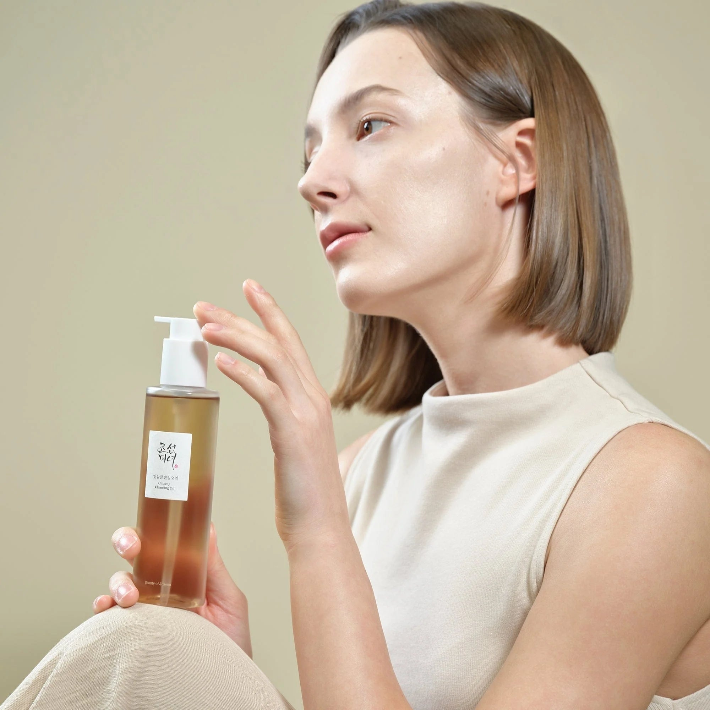
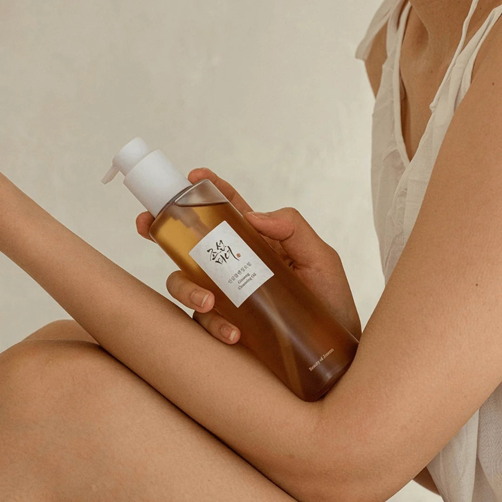
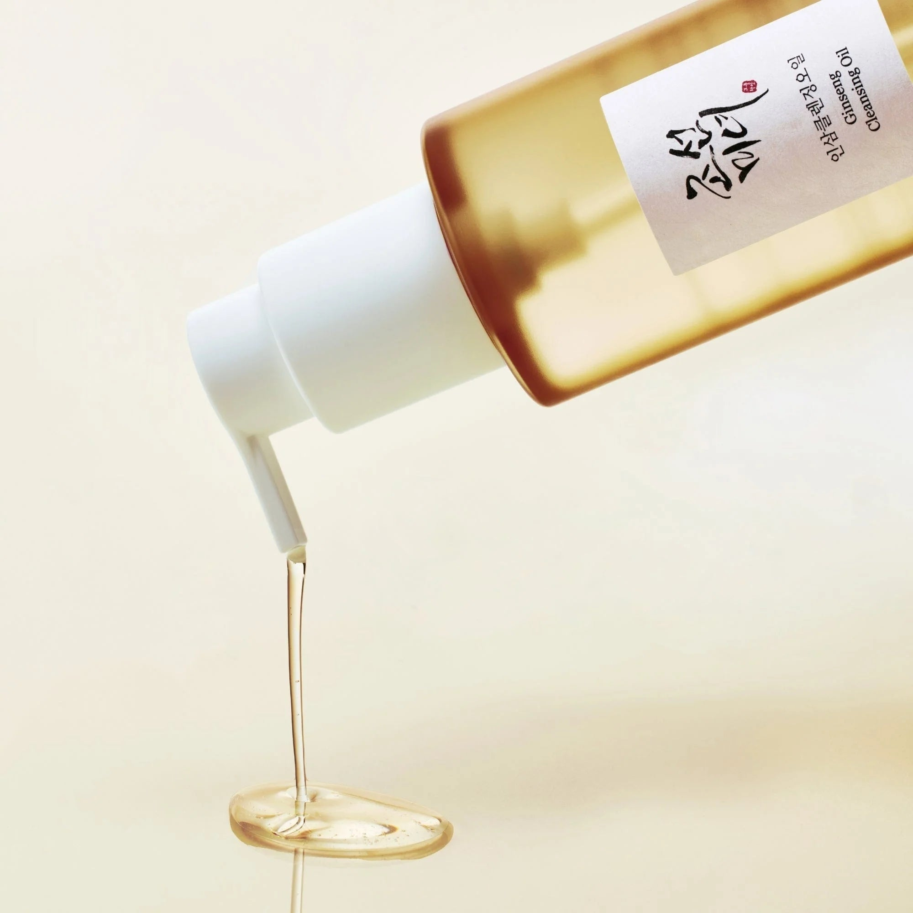
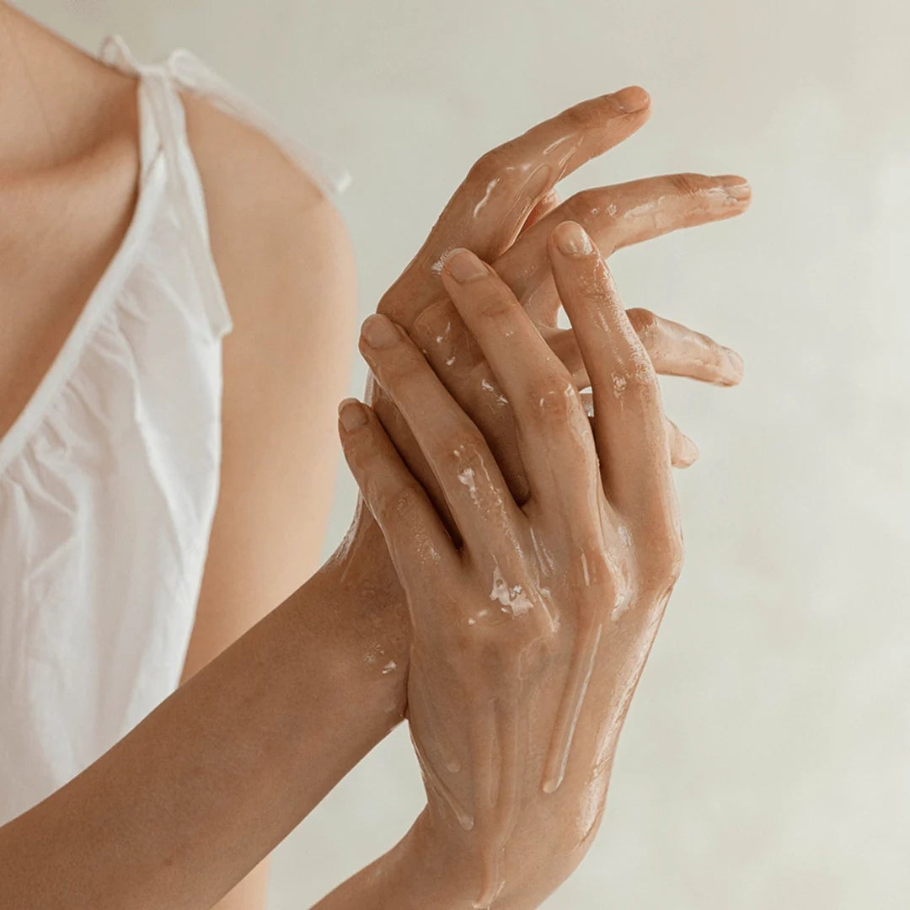
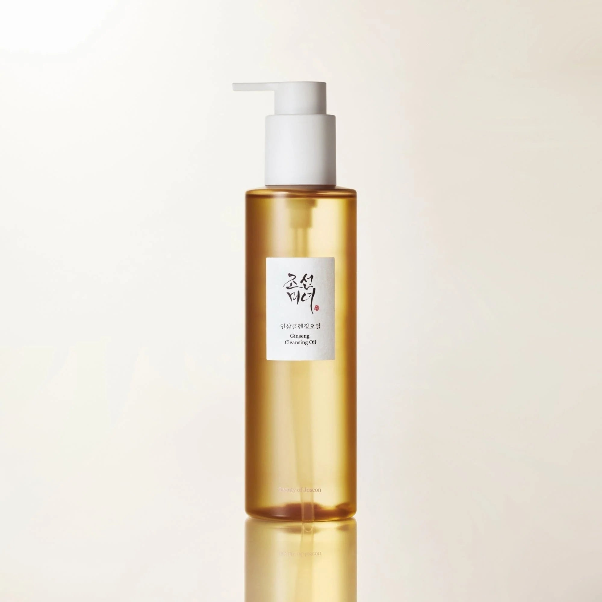

 | Bucura-te de o curatare profunda, dar extrem de blanda, cu uleiul Beauty of Joseon. Flaconul generos si textura bogata a uleiului sunt ideale pentru a dizolva machiajul si excesul de sebum fara a irita pielea. Simte delicatetea unei curatari coreene autentice chiar la tine acasa. |
| Textura matasoasa a uleiului cu ginseng se transforma intr-o emulsie fina, purificand porii fara a usca pielea. Formula sa, bazata pe extractul nutritiv de ginseng, revitalizeaza si catifeleaza tenul cu fiecare utilizare. Ambalajul practic cu pompita asigura o dozare precisa si igienica a produsului. |  |
 | O textura lichida si fina, perfecta pentru un masaj facial relaxant in timpul curatarii. Acest ulei cu ginseng aluneca delicat pe piele, dizolvand eficient impuritatile si machiajul de pe suprafata tenului si din pori. O experienta senzoriala de curatare profunda care lasa pielea curata si matasoasa. |
| Reda stralucirea tenului tau cu uleiul de curatare cu Ginseng de la Beauty of Joseon. Acest produs combina intelepciunea traditionala cu stiinta moderna pentru a oferi o curatare profunda, dar delicata. Formula sa pe baza de ulei nutritiv dizolva impuritatile, hidratand si revitalizand pielea. |  |